Sobre Nosotros
El Semillero de Investigación en Geofísica Aplicada y Computacional (SIGAC) fomenta la formación científica en modelamiento numérico, simulación directa e inteligencia artificial aplicada a la exploración del subsuelo, la energía sostenible y los recursos estratégicos.
Docentes
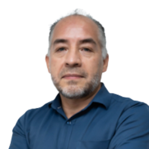
Sait Khurama Velásquez
Geólogo con 30 años de experiencia en diferentes áreas del conocimiento geológico. Candidato a Doctor en Ciencias de la Tierra y del Universo. MSc. en Geofísica. Trece años como docente en la Universidad Industrial de Santander, donde ha sido director de la Escuela de Geología y coordinador de las Maestrías de Geología y Geofísica.
Email: skhurama@uis.edu.co
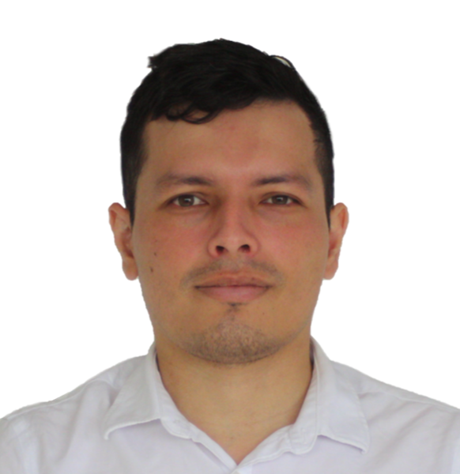
Yesid Paul Goyes Peñafiel
Geólogo con 10 años de experiencia en diferentes áreas del conocimiento geológico. M.Sc. en Geofísica de la Universidad Estatal de Perm, Rusia. Candidato a Doctor en Ciencias de la Computación (UIS). Intereses: teoría inversa, adquisición y procesamiento sísmico, métodos potencial-EM y deep learning en geosciencias.
Email: yesid2198435@correo.uis.edu.co
Profesionales
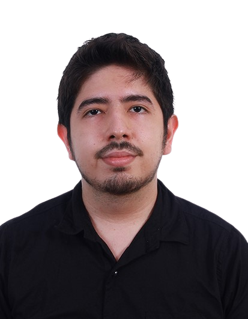
Nicolás Córdoba Castillo
Geólogo, M.Sc. en Geofísica, con experiencia en el sector O&G, modelamiento petrofísico y machine learning aplicado a la geología.
Email: nicolas2228413@correo.uis.edu.co
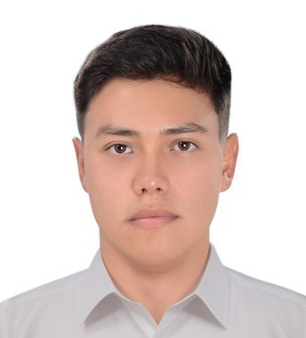
Gabriel Moreno Sánchez
Geólogo con intereses en modelamiento de anomalías gravimétricas, gravimetría y geotermia. Participó en el proyecto “Modelamiento e inversión de anomalías gravimétricas, caso de estudio: Volcán Cerro Machín”.
Email: gabriel2210609@correo.uis.edu.co
Estudiantes de Maestría
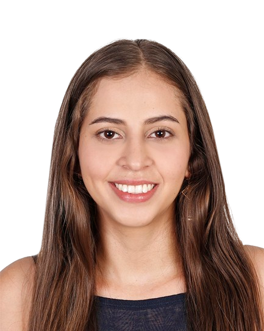
Ana Gabriela Mantilla Dulcey
Geóloga, estudiante de maestría en geofísica, interesada en geología de campo y computación aplicada a la exploración económica y geofísica. Trabaja en aprendizaje automático para inversión geofísica.
Email: ana.mantilla@correo.uis.edu.co
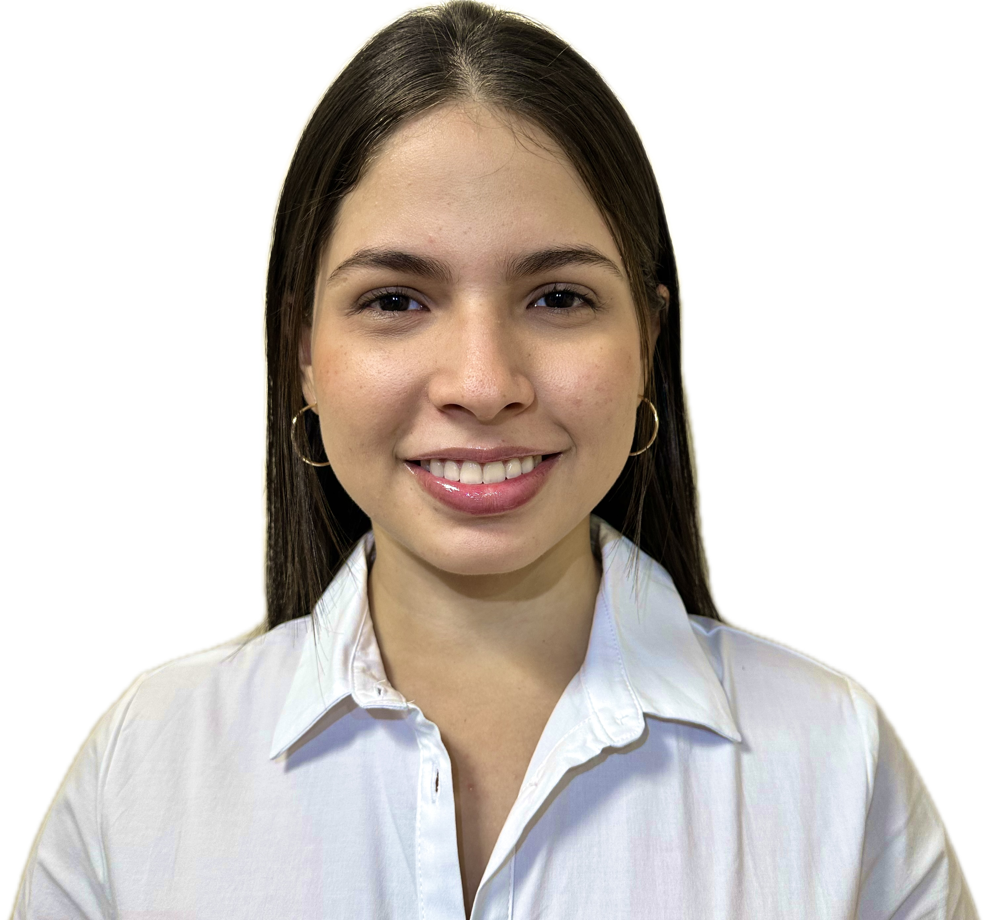
Daniela Quintero Madariaga
Geóloga con intereses en Geofísica, Geociencias Computacionales y Geología Estructural. Dentro del semillero realizó su tesis de pregrado titulada “Integración multifísica para la corrección del desplazamiento estático en métodos eléctricos y disminución de la incertidumbre en los modelos del subsuelo”.
Email: daniela2202434@correo.uis.edu.co
Estudiantes de Pregrado
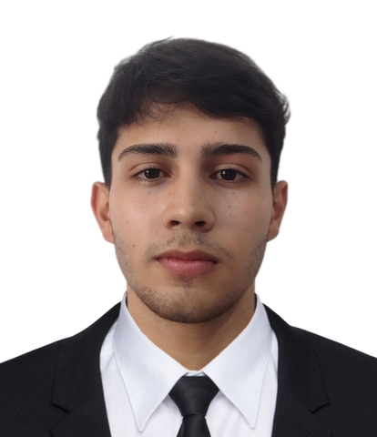
Adrián Alvercy Pérez Montejo
Estudiante de geología con intereses en geofísica, geología estructural e hidrogeología. Participó en el proyecto “Aprendizaje profundo guiado por la física para la inversión no supervisada de sondeos eléctricos verticales” y actualmente se encuentra trabajando en el proyecto de “oil seeps”.
Email: adrian2212481@correo.uis.edu.co
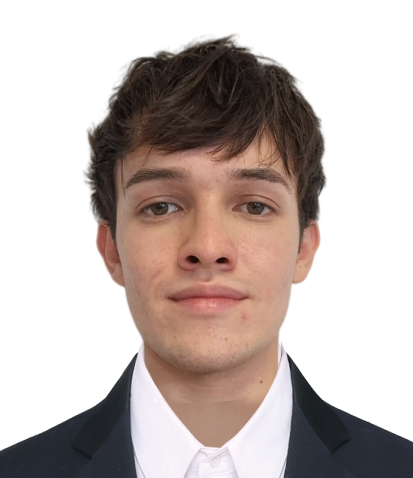
Kevin Gabriel Tarazona Balaguera
Estudiante de geología interesado en geofísica computacional, simulaciones directas y modelamiento de resistividad eléctrica 3D. Actualmente desarrolla su tesis de pregrado titulada “Estimación de modelos de velocidad mediante aprendizaje profundo no supervisado guiado por la física”.
Email: kevin2211691@correo.uis.edu.co
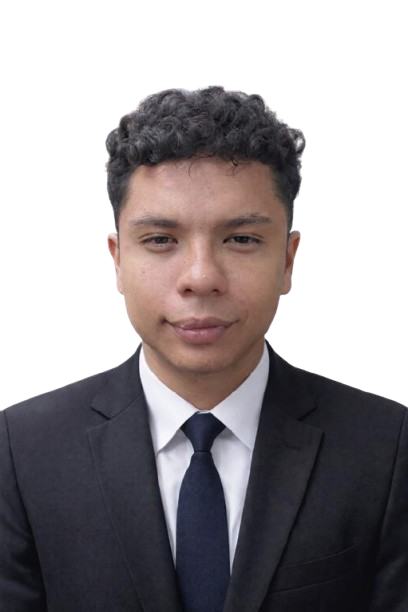
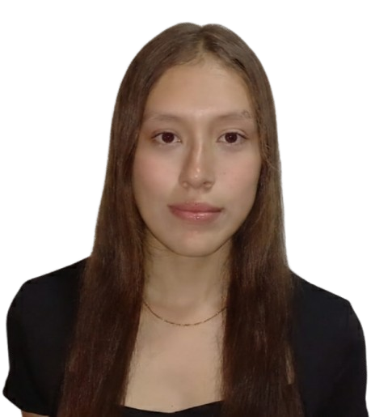
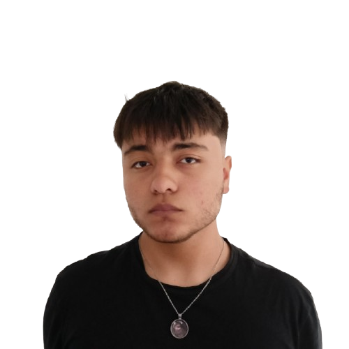
Thomas Leopoldo Quiñonez Pineda
Estudiante de geología de séptimo semestre con intereses: Geología Estructural, Geofísica, Teledetección y Sistemas de Información Geográfica (SIG). Dentro del semillero se encuentra trabajando en el proyecto de “oil seeps”.
Email: thomas1212ttt@gmail.com
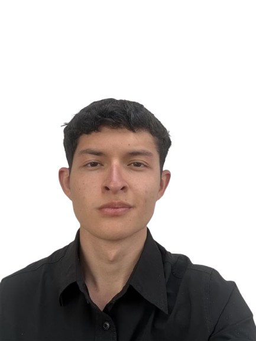
Juan Sebastián Vesga Figueroa
Estudiante de geología de séptimo semestre con intereses: Geofísica, Geociencias Computacionales, SIG y geología estructural. Dentro del semillero se encuentra trabajando en el proyecto de “oil seeps”.
Email: sebastfigueroa27@gmail.com